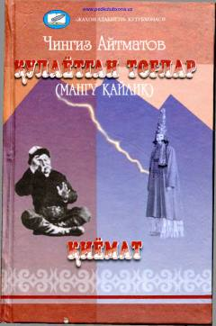

QTInson taqdiri va hayotning murakkab sirlari haqidagi falsafiy roman.
Chingiz Aytmatovning ushbu asari inson taqdiri, qismat va hayotning murakkab sirlari haqida hikoya qiladi. Roman qahramonlarning samoviy bog'liqligi va hayotdagi kutilmagan voqealar rivoji orqali insoniy kechinmalarni chuqur tahlil qiladi.